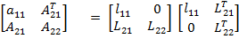
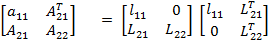
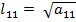
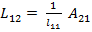
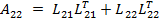
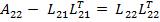

Pertama partisikan matriks A menjadi


Dalam menyelesaikan persamaanlinear Ax = b dengan A adalah matriks m x m akan memakan waktu yang sangat lama. Dan dalam menyelesaikan persamaan tersebut kadang kala kita tidak teliti dan dan akhirnya mengalami kesalahan.
Dibeberapa kasus kita akan menemukan sebuah matriks A ∈ R m x m yang sifatnya singular definit positif. Singular definit positif jika matriks bersifat singular maksudnya nilai matriks A sama dengan matriks hasil transposnya atau A = AT. Kemudian matriks A bersifat definit positif jika untuk setiap vektor tidak nol x ∈ Rm maka xT A x > 0 .
Jika matriks memenuhi syarat tersersebut diatas maka matriks dapat di dekomposisi menjadi matriks segitiga.
Diberikan matriks singular definit positif A maka terdapat matriks segitiga bawah L , sehingga
A = L LT
Matriks L disebut juga sebagai Cholesky Factor dari matriks A Lalu, dengan persamaan diatas kita bisa
melakukan penyelesaian persamaan Ax = b sebagai berikut
L LT = b
kemudian kita berikan z = LT, sehingga
L z = b
Nilai vektor z dapat dihitung dengan menyelesaikan persamaan L z = b dan setelah itu x dapat dihitung dengan menyelesaikan persamaan LT x = z. Hal ini akan lebih mudah dilakukan sebab L adalah matriks segitiga bawah sehingga kita dapat menerapakan metode forward substitution untuk menyelesaikan persamaan tersebut. Begitupun dengan LT x = z, karena LT adalah matriks segitiga atas, sehingga kita bisa menerapkan metode backward substitution untuk menyelesaikannya.
Nah, masalahnya adalah bagaimana cara menghitung matriks L nya. Untuk menghitung
matriks L nya kita dapat menerapkan cara berikut
Pertama partisikan matriks A menjadi

Kemudian kita dapat menghitung l11 dan L12 dengan cara

dan

Lalu untuk menghitung L22


for j = 1 to n αi,j := sqrt(αi,j) for i = j+i to n αi,j = αi,j/αj,j endfor for k = j + 1 to n for i = k to n αi,k = αi,j - αi,k*αk,j endfor endfor endfor